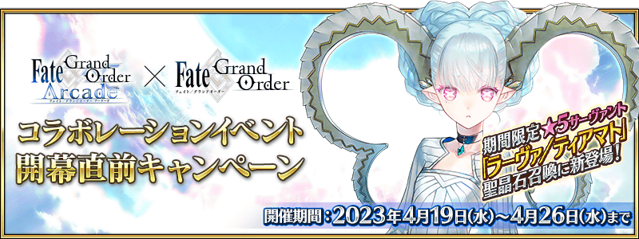
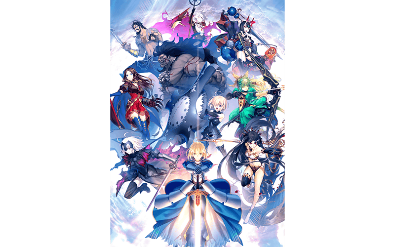
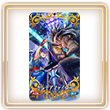
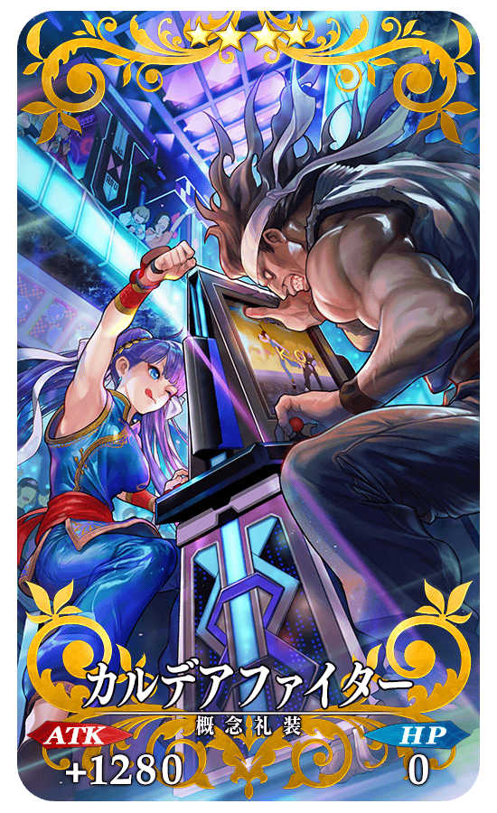
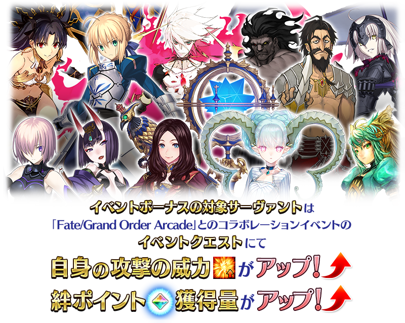
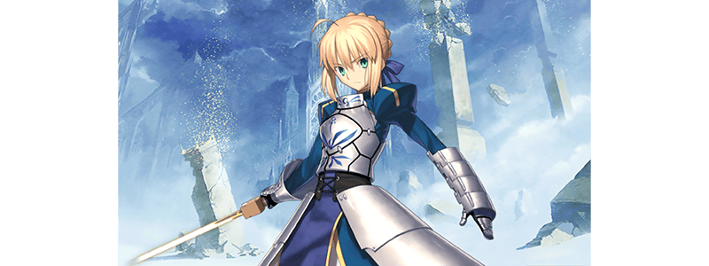
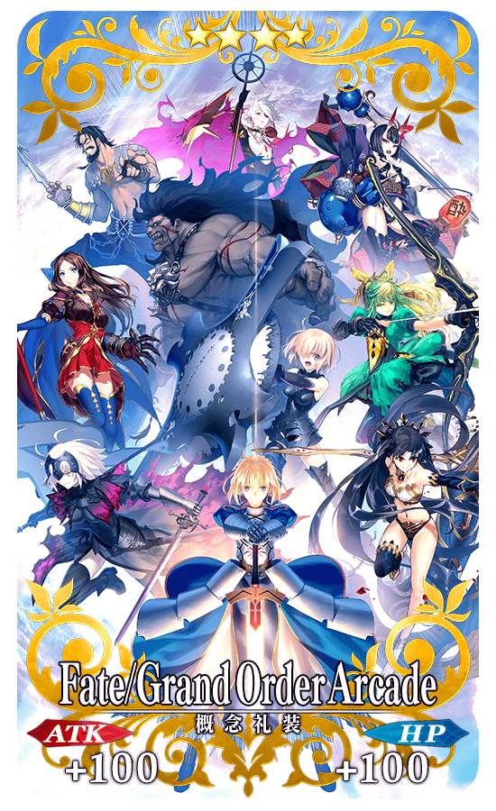

以期間限定舉辦「Fate/Grand Order Arcade×Fate/Grand Order聯動活動開幕前夕宣傳活動」。
為了記念預定自2023年4月26日(三)開幕的與「Fate/Grand Order Arcade」的聯動活動，實施給予聖晶石與聯動記念概念禮裝的特別登入獎勵、每日關卡「蒐集種火」「修練場」全星期開放、對象從者的強化大成功＆極大成功發生率2倍等實施各式各樣措施！
※本頁面皆為開發中圖片。會有與實際圖片相異的情況。 ※在2018年12月31日(二) 23:00以後新配信的主線故事及期間限定活動、一部份關卡、宣傳活動及召喚中，會顯示隱藏真名的對象從者真名。
◆宣傳活動舉辦期間◆
2023年4月19日(三) 17:00～4月26日(三) 11:59
「Fate/Grand Order Arcade」概要
「Fate/Grand Order Arcade」是操控在「Fate/Grand Order」登場的從者，全國連線3位玩家組隊挑起戰鬥的「英靈召喚團隊戰鬥」。
熟悉的元素如「卡面」和「概念禮装」要素會做為實體卡片發行外，透過搖桿與2個按鍵為中心的簡單操作性，就算是初次遊玩街機遊戲的玩家也能安心遊玩。
【標題】
Fate/Grand Order Arcade
【分類】
英靈召喚團隊戰鬥
【營運日】
自2018年7月26日營運中
【詳情在官方網站】
https://arcade.fate-go.jp/
 ©TYPE-MOON / FGO ARCADE PROJECT
為了記念與「Fate/Grand Order Arcade」的聯動活動記念，實施特別登入獎勵。
在期間中登入7次(1天算1次)的話，贈送聯動記念概念禮裝4張、聖晶石3個！
◆舉辦期間◆
2023年4月20日(四) 3:00～5月4日(四) 2:59
◆贈送對象◆
2023年5月3日(三) 2:59前通過「特異點F 炎上汙染都市 冬木」的御主對象
※上述時間前，在管理室(ターミナル)畫面的關卡橫幅必須要有「CLEAR」的文字顯示。
【特別次數登入獎勵】
| 登入次數 | 贈送內容 | |
|---|---|---|
| 第1次 | ★4(SR)「U FOU キャッチャー」 1張 | |
| 第2次 |

|
聖晶石 1個 |
| 第3次 |  | ★4(SR)「カルデアファイター」 1張 |
| 第4次 |
|
聖晶石 1個 |
| 第5次 | ★4(SR)「オペラ・イン・アーケード」 1張 | |
| 第6次 |
|
聖晶石 1個 |
| 第7次 | ★4(SR)「ラン・オルタ・ラン！」 1張 | |
※登入獎勵會在每天3:00配發。 ※合計7天內能領取，但根據成為贈送對象的時間點，可能無法到此上限。 ※4張聯動記念概念禮裝在預定自2023年4月26日(三)開幕的與「Fate/Grand Order Arcade」聯動活動中沒有活動加成等。
◆「Fate/Grand Order Arcade×Fate/Grand Order」聯動記念概念禮裝◆
|
★★★★SR |
|  |
★★★★SR |
|
★★★★SR |
|
★★★★SR |
與「Fate/Grand Order Arcade」聯動活動的期間中，下表的從者在活動關卡中會得到「自身的攻擊威力提升」與「絆點數獲得量提升」的加成！
強化對象從者來挑戰活動吧！
※活動加成的效果量因從者而異。

【活動加成的對象從者】
| 職階 | 稀有度 | 從者名 |
|---|---|---|
| Saber | ★★★★★ | 亞瑟・潘德拉剛〔Prototype〕 |
| ★★★★★ | 阿斯托爾福 | |
| ★★★★★ | 阿蒂拉 | |
| ★★★★★ | 阿爾托莉亞・潘德拉剛 | |
| ★★★★★ | 沖田總司 | |
| ★★★★★ | 千子村正 | |
| ★★★★★ | 尼祿・克勞狄烏斯〔Bride〕 | |
| ★★★★★ | 宮本武藏 | |
| ★★★★★ | 莫德雷德 | |
| ★★★★★ | 兩儀式 | |
| ★★★★ | 阿爾托莉亞・潘德拉剛〔Alter〕 | |
| ★★★★ | 葛飾北齋 | |
| ★★★★ | 齊格飛 | |
| ★★★★ | 騎士德翁 | |
| ★★★★ | 女王梅芙 | |
| ★★★★ | 尼祿・克勞狄烏斯 | |
| ★★★ | 蓋烏斯・尤利烏斯・凱撒 | |
| ★★★ | 吉爾・德・萊斯 | |
| Archer | ★★★★★ | 阿周那 |
| ★★★★★ | 阿爾托莉亞・潘德拉剛 | |
| ★★★★★ | 伊絲塔 | |
| ★★★★★ | 吉爾伽美什 | |
| ★★★★★ | 詹姆斯・莫里亞蒂(新宿的Archer) | |
| ★★★★★ | 貞德 | |
| ★★★★★ | 清少納言 | |
| ★★★★ | 淺上藤乃 | |
| ★★★★ | 阿塔蘭塔 | |
| ★★★★ | Emiya | |
| ★★★★ | 織田信長 | |
| ★★★★ | 克洛伊・馮・愛因茲貝倫 | |
| Lancer | ★★★★★ | 阿爾托莉亞・潘德拉剛 |
| ★★★★★ | 恩奇都 | |
| ★★★★★ | 埃列什基伽勒 | |
| ★★★★★ | 迦爾納 | |
| ★★★★★ | 斯卡薩哈 | |
| ★★★★★ | 玉藻前 | |
| ★★★★★ | 布拉達曼特 | |
| ★★★★ | 阿爾托莉亞・潘德拉剛〔Alter〕 | |
| ★★★★ | 伊莉莎白・巴托里 | |
| ★★★★ | 虞美人 | |
| ★★★★ | 源賴光 | |
| ★★ | 武藏坊弁慶 | |
| ★★ | 列奧尼達一世 | |
| Rider | ★★★★★ | 阿爾托莉亞・潘德拉剛〔Alter〕 |
| ★★★★★ | 伊斯坎達爾 | |
| ★★★★★ | 奧茲曼迪亞斯 | |
| ★★★★★ | 司馬懿〔萊涅絲〕 | |
| ★★★★★ | 弗朗西斯・德雷克 | |
| ★★★★★ | 李奧納多・達・文西 | |
| ★★★★ | 瑪莉・安東尼 | |
| ★★★★ | 瑪爾大 | |
| ★★★ | 布狄卡 | |
| ★★★ | 美杜莎 | |
| ★★ | 愛德華・蒂奇 | |
| ★★ | 聖喬治 | |
| Caster | ★★★★★ | 伊莉雅絲菲爾・馮・愛因茲貝倫 |
| ★★★★★ | 諸葛孔明〔埃爾梅羅Ⅱ世〕 | |
| ★★★★★ | 斯卡薩哈＝斯卡蒂 | |
| ★★★★★ | 玉藻前 | |
| ★★★★★ | 梅林 | |
| ★★★★★ | 李奧納多・達・文西 | |
| ★★★★ | 吉爾伽美什 | |
| ★★★★ | 美遊・艾蒂菲爾特 | |
| ★★★★ | 美狄亞〔Lily〕 | |
| ★★★ | 庫・夫林 | |
| ★★★ | 吉爾・德・萊斯 | |
| ★ | 沃夫岡・阿瑪迪斯・莫札特 | |
| Assassin | ★★★★★ | 刑部姬 |
| ★★★★★ | 開膛手傑克 | |
| ★★★★★ | 酒吞童子 | |
| ★★★★★ | 光之高揚斯卡婭 | |
| ★★★★★ | “山之翁” | |
| ★★★★ | 卡米拉 | |
| ★★★★ | 格蕾 | |
| ★★★★ | 尼托克里絲 | |
| ★★★★ | 兩儀式 | |
| ★★★ | 岡田以藏 | |
| ★★ | 咒腕的哈桑 | |
| ★★ | 歌劇魅影 | |
| ★ | 瑪塔・哈里 | |
| Berserker | ★★★★★ | 弗拉德三世 |
| ★★★★★ | 庫・夫林〔Alter〕 | |
| ★★★★★ | 坂田金時 | |
| ★★★★★ | 南丁格爾 | |
| ★★★★★ | 謎之女主角X〔Alter〕 | |
| ★★★★★ | 宮本武藏 | |
| ★★★★★ | 摩根 | |
| ★★★★ | 茨木童子 | |
| ★★★★ | 貞德〔Alter〕 | |
| ★★★★ | 赫拉克勒斯 | |
| ★★★★ | 蘭斯洛特 | |
| ★★★ | 清姬 | |
| ★★ | 卡利古拉 | |
| ★ | 保羅・班揚(看漫畫了解Berserker) | |
| Ruler | ★★★★★ | 天草四郎 |
| ★★★★★ | 阿爾托莉亞・潘德拉剛 | |
| ★★★★★ | 夏洛克・福爾摩斯 | |
| ★★★★★ | 貞德 | |
| ★★★★ | 阿斯特蕾亞 | |
| Avenger | ★★★★★ | 巖窟王 |
| ★★★★★ | 貞德〔Alter〕 | |
| Alterego | ★★★★★ | Meltryllis |
| ★★★★★ | 幼體／迪亞馬特 | |
| ★★★★ | Passionlip | |
| MoonCancer | ★★★★★ | BB |
| ★★★★ | BB | |
| Foreigner | ★★★★★ | 艾比蓋兒・威廉斯〔夏〕 |
| ★★★★★ | 葛飾北齋 | |
| ★★★★★ | 雅克・德・莫萊 | |
| ★★★★ | 謎之女主角XX | |
| Pretender | ★★★★★ | 阿瓦隆女士 |
| Shielder | ★★★ | 瑪修・基利艾拉特 |
※就算成為對象從者也會有未在本活動的主線劇本登場的情況。 ※自4月19日(三) 17:00，在從者選擇畫面和從者強化畫面等，追加活動加成篩選器。由於是只顯示於活動活躍從者的便利功能，敬請活用。
下述的期間中，在進行強化活動加成對象從者從者時，大成功(經驗值2倍加成)・極大成功(經驗值3倍加成)的發生率以期間限定變成2倍！
務必藉此機會強化從者吧！
◆舉辦期間◆
2023年4月19日(三) 17:00～4月26日(三) 11:59
◆對象從者◆
關於對象從者請確認此處。

下述的期間中，在關卡開始時的支援選擇畫面，選擇其他御主的活動加成對象從者做支援情況、其他御主選擇自己的活動加成對象從者做支援情況，友情點數獲得量變成2倍。
藉此機會入手更多友情點數吧！
◆舉辦期間◆
2023年4月19日(三) 17:00～4月26日(三) 11:59
◆對象從者◆
關於對象從者請確認此處。
※非好友的御主也是友情點數獲得量2倍的對象。 ※請注意NPC從者的情況為友情點數獲得量2倍的對象外。
下述的期間中，活動加成從者的強化關卡消耗AP變成1/2！(就算在戰鬥中撤退的情況，也會是同様的消耗量)
務必藉此機會通過尚未通過的從者強化關卡吧！
◆舉辦期間◆
2023年4月19日(三) 17:00～4月26日(三) 11:59
◆對象從者◆
有存在強化關卡的活動加成從者
- ▼確認對象從者▼
下述的期間中，活動加成從者的幕間物語消耗AP變成1/2！(就算在戰鬥中撤退的情況，也會是同様的消耗量)
藉此機會滿足開放條件，通過對象從者的幕間物語吧！
◆舉辦期間◆
2023年4月19日(三) 17:00～4月26日(三) 11:59
◆對象從者◆
有存在幕間物語的活動加成從者
- ▼確認對象從者▼
下述的期間中，主線關卡第1部的自由關卡的初次通過為止的消耗AP變成1/2！(就算在戰鬥中撤退的情況，也會是同様的消耗量)
還留有尚未通過自由關卡的御主玩家，務必藉此機會通過吧！
◆舉辦期間◆
2023年4月19日(三) 17:00～4月26日(三) 11:59
◆對象關卡◆
主線關卡第1部的自由關卡
※初次通過是指入手初次通過報酬的時間點。
為了記念「Fate/Grand Order Arcade×Fate/Grand Order聯動活動開幕前夕宣傳活動」的舉辦，個人空間(マイルーム)以期間限定變成特別樣式！
與中意的從者一起享受期間限定的個人空間模樣！
◆期間◆
2023年4月19日(三) 17:00～與「Fate/Grand Order Arcade」聯動活動開始為止

在迦勒底之門內以分天出現的關卡「蒐集種火」與「修練場」以期間限定全種類開放。
◆舉辦期間◆
2023年4月19日(三) 17:00～4月26日(三) 11:59
◆對象關卡◆
・所有的「蒐集種火」的關卡
・所有的「修練場」的關卡
※以期間限定出現的「蒐集種火」及「修練場」會繼承「關卡情報」到平常每天輪流出現的「蒐集種火」及「修練場」關卡。 ※每日關卡的詳細如下。
【每日關卡一覧】
| 關卡名 | 可做為戰利品獲得 的主要道具 |
攻略推薦 職階 |
|---|---|---|
| 【聯動活動開幕前夕】 每日交替 蒐集種火<殺・槍篇> |
Assassin、Lancer、Berserker的經驗值卡 |   |
| 【聯動活動開幕前夕】 每日交替 蒐集種火<騎・劍篇> |
Rider、Saber、Berserker的經驗值卡 |   |
| 【聯動活動開幕前夕】 每日交替 蒐集種火<術・弓篇> |
Caster、Archer、Berserker的經驗值卡 |   |
| 【聯動活動開幕前夕】 每日交替 蒐集種火<槍・殺篇> |
Lancer、Assassin、Berserker的經驗值卡 | |
| 【聯動活動開幕前夕】 每日交替 蒐集種火<劍・騎篇> |
Saber、Rider、Berserker的經驗值卡 | |
| 【聯動活動開幕前夕】 每日交替 蒐集種火<弓・術篇> |
Archer、Caster、Berserker的經驗值卡 | |
| 【聯動活動開幕前夕】 每日交替 蒐集種火<隨機篇> |
Saber、Archer、Lancer、Rider、Caster、Assassin、Berserker的經驗值卡(隨機) | - |
| 【聯動活動開幕前夕】 每日交替 弓之修練場 |
Archer的靈基再臨用道具、Archer的技能強化素材道具 |  |
| 【聯動活動開幕前夕】 每日交替 槍之修練場 |
Lancer的靈基再臨用道具、Lancer的技能強化素材道具 | |
| 【聯動活動開幕前夕】 每日交替 狂之修練場 |
Berserker的靈基再臨用道具、Berserker的技能強化素材道具 | ALL |
| 【聯動活動開幕前夕】 每日交替 騎之修練場 |
Rider的靈基再臨用道具、Rider的技能強化素材道具 |  |
| 【聯動活動開幕前夕】 每日交替 術之修練場 |
Caster的靈基再臨用道具、Caster的技能強化素材道具 | |
| 【聯動活動開幕前夕】 每日交替 殺之修練場 |
Assassin的靈基再臨用道具、Assassin的技能強化素材道具 | |
| 【聯動活動開幕前夕】 每日交替 劍之修練場 |
Saber的靈基再臨用道具、Saber的技能強化素材道具 | |
※Berserker在所有的每日關卡皆為有效職階。
為了記念與「Fate/Grand Order Arcade」聯動活動，下述的期間中「Fate/Grand Order Arcade營運記念關卡」復刻！
通過的話關卡限定概念禮裝獲得することできます。
※前回舉辦時に關卡通過している情況はプレイすることできません。
◆舉辦期間◆
2023年4月19日(三) 17:00～4月26日(三) 11:59
◆關卡開放條件◆
有通過「特異點F 炎上汙染都市 冬木」的御主對象
◆「Fate/Grand Order Arcade營運記念關卡」限定概念禮裝◆
|  |
★★★★SR |
「Fate/Grand Order Arcade營運記念關卡」的開放權永久追加！
自復刻舉辦期間結束後的2023年4月26日(三) 12:00(預定)，在達文西工房的「稀有稜鏡交換」永久追加「Fate/Grand Order Arcade營運記念關卡」的關卡開放權。
並且，有通過「終局特異點」的情況即可免費交換關卡開放權！
◆追加時間◆
2023年4月26日(三) 12:00～(預定)
◆交換條件◆
滿足以下條件的御主才能交換
・通過「特異點F 炎上汙染都市 冬木」
・未通過「Fate/Grand Order Arcade營運記念關卡」
◆關卡開放權交換免費化的條件◆
滿足以下條件的御主才能免費交換
・通過「終局特異點」
◆追加道具(永久)◆
| 追加道具 | 能交換次數 | 1次交換所需的 稀有稜鏡數 |
|---|---|---|
| Fate/Grand Order Arcade營運記念關卡 | 1次 |
3個 有通過「終局特異點」的情況就能免費交換！ |
※追加到「稀有稜鏡交換」「Fate/Grand Order Arcade營運記念關卡」的關卡開放權為永久，沒有交換期限。 ※關於已持有交換對象概念禮裝的玩家，剩餘次數的顯示會是「0次」，無法交換。 ※在用稀有稜鏡3個交換「Fate/Grand Order Arcade營運記念關卡」的關卡開放權後達成交換免費化條件的情況，會返還交換使用的稀有稜鏡3個到禮物箱。 ※在通過關卡入手的限定概念禮裝會是最大等級。 ※請注意在「Fate/Grand Order Arcade營運記念關卡」沒有文字冒險部份。
強化「★5(SSR)李奧納多・達・文西(Caster)」「★5(SSR)“山之翁”」的特別關卡「從者強化關卡」，在迦勒底之門永久追加。
不僅進行對象從者的強化，也可獲得聖晶石做為關卡通過報酬。
※請注意在從者強化關卡沒有文字冒險部份。
◆追加時間◆
2023年4月19日(三) 17:00～
◆開放條件◆
持有強化對象從者，必須使其最終再臨且有通過對象從者的強化關卡。
※未持有對象從者的話，不會出現關卡。
※關卡沒有舉辦期限。
其他還有，期間限定「Fate/Grand Order Arcade×Fate/Grand Order聯動活動開幕前夕Pick Up召喚」等的情報公開中！
關於詳情，請自下述橫幅確認。
■「Fate/Grand Order Arcade×Fate/Grand Order聯動活動開幕前夕Pick Up召喚」詳細情報